Оркестр 1703
Первый собственный сайт коллектива с афишей, покупкой билетов и характером самого дружелюбного оркестра
- Роль
- Дизайн, UX, тексты интерфейса и вёрстка
- Инструменты
- Figma, HTML, CSS, JavaScript
01 Контекст и цели
Оркестр 1703 из Санкт-Петербурга, художественный руководитель которого композитор Георгий Фёдоров. Это первый собственный сайт оркестра.
Раньше вся информация жила в соцсетях, потом её собрали в Taplink. Но Taplink почти не работал: через него приходило около 5% переходов. Половина зрителей приходила из ВКонтакте, остальные — из Instagram, Google и сторонних афиш. Taplink — это список ссылок без визуала, без характера оркестра и без нормальной афиши, а чтобы купить билет, нужно было пролистать посты или перейти по нескольким ссылкам.
Вывод: оркестру нужна своя площадка, куда можно вести людей из всех каналов сразу, — с афишей и покупкой билета в один-два клика.
02 Как шла работа
- Первая версия
Начали без полного брифа. Мой первый дизайн получился слишком академическим, и его долго не могли согласовать.
- Бриф
Полноценный бриф я получила на первом круге правок и пересобрала дизайн под него.
- Правки2 круга
Заказчик присылал документ с правками, я вносила их все.
- Сроки3 месяца
Жесткого срока не было. От старта до сдачи работа заняла 3 месяца.
- Сдача
Заказчик принял сайт, он запущен в ноябре 2026 года.
03 Задача
Собрать афишу, информацию об оркестре и покупку билетов в одном месте так, чтобы до билета был один-два клика, и при этом передать характер оркестра, где сочетаются классика с юмором.
04 Концепция и визуальный стиль
В основе тональности бренда лежит слоган «Самый дружелюбный оркестр». Эта интонация считывается везде, от приветствия на первом экране до форм обратной связи «Давайте дружить» и «Есть вопрос или идея?».
Визуально проект опирается на ретро-типографику концертных афиш с широким гротеском, плотными обводками, смещёнными тенями, полутоновым растром и звездой-штампом. Палитра совпадает с тестом «Кто ты из мира музыки?», поэтому сайт и спецпроект воспринимаются как единая система.
Цвет
- Глубокий зелёный#1A3029 — текст, обводки, тени
- Коралловый#EC6762 — билеты и главные действия
- Горчичный#F4BB66 — акценты, хит сезона
- Крем#FFFCF5 — карточки
05 Ключевые UX/UI-решения
-
Анонс ближайшего концерта на первом экране
Сразу при входе на сайт человек видит карточку ближайшего выступления с датой, временем и площадкой, откуда в один клик можно перейти к подробностям.
-
Покупка билетов всегда под рукой
Ярко-коралловая кнопка «Билеты» закреплена в шапке и дублируется в каждой карточке. Этот цвет на сайте используется строго для одного целевого действия.
-
Все даты популярных программ в одной карточке
Если концерт идёт несколько раз за сезон, ближайшие даты выводятся чипами прямо на карточке, а остальные сворачиваются под кнопку «Ещё 3». Зрителю не приходится выискивать удобный день по всей афише.
-
Быстрый фильтр по площадкам
Оркестр выступает в Анненкирхе и Капелле, поэтому фильтр помогает сразу отсеять лишнее тем, кому принципиально добираться в конкретную локацию.
-
Вся практическая информация на странице концерта
Дата, время, адрес площадки, длительность и возрастной ценз собраны крупно в одном блоке прямо рядом с кнопкой покупки, чтобы человек получил ответы на все вопросы ещё до перехода к билетному оператору.
-
Блок социального доказательства
Упоминания в «Фонтанке» и «Снобе» вместе с рассказом о художественном руководителе снимают сомнения у новой аудитории, которая ещё не знакома с коллективом.
-
Контакты без лишних переходов
Форма обратной связи, почта и ссылки на соцсети собраны на одном экране, чтобы и зрители, и потенциальные партнёры могли написать команде за пару секунд.
06 Ограничения заказчика
-
Домен .com, все зрители в России
Ограничение
Оркестр сам купил домен orchestra1703.com, а сайт должен стабильно открываться у российской аудитории.
Решение
Сайт живет на собственном хостинге с доменом orchestra1703.com.
-
Афишу меняют без меня
Ограничение
Оркестру нужно самому обновлять концерты и тексты, не дожидаясь дизайнера.
Решение
Сделала админку orchestra1703.com/admin: заказчик сам правит афишу и информацию об оркестре.
-
Не просто сдать и готово
Ограничение
Смысл не в том, чтобы просто сдать макет, а чтобы зрители реально шли за билетами.
Решение
Настроила Яндекс Метрику и цель на клик по кнопке «Билеты».
07 Экраны, макеты и адаптив

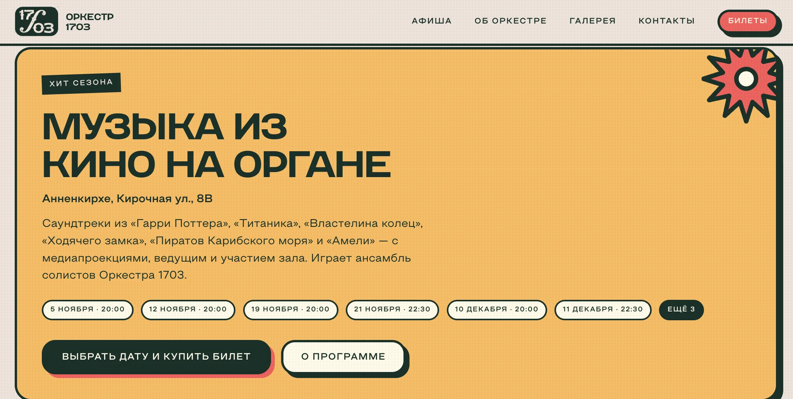

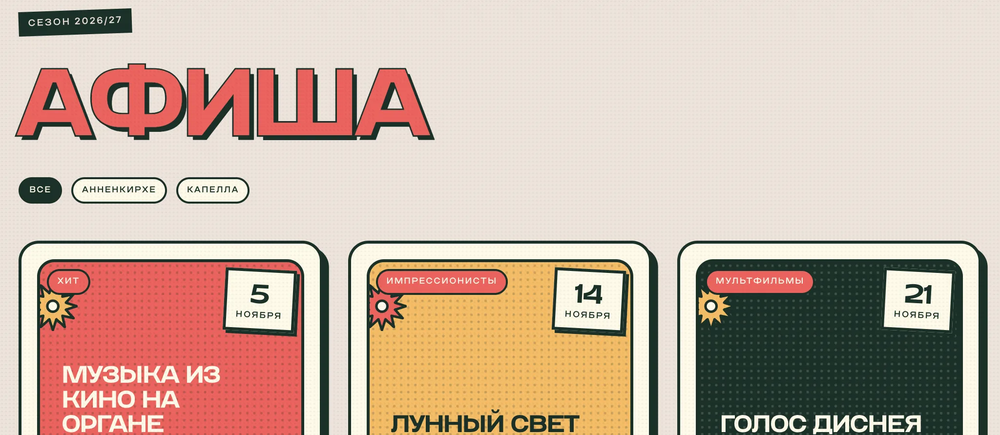

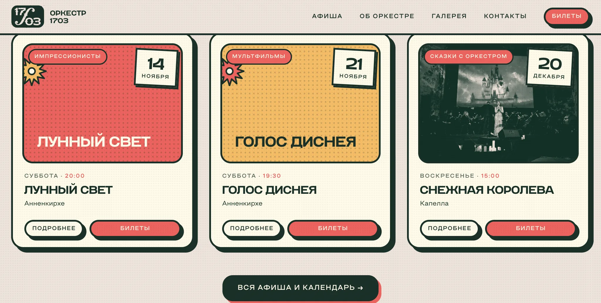

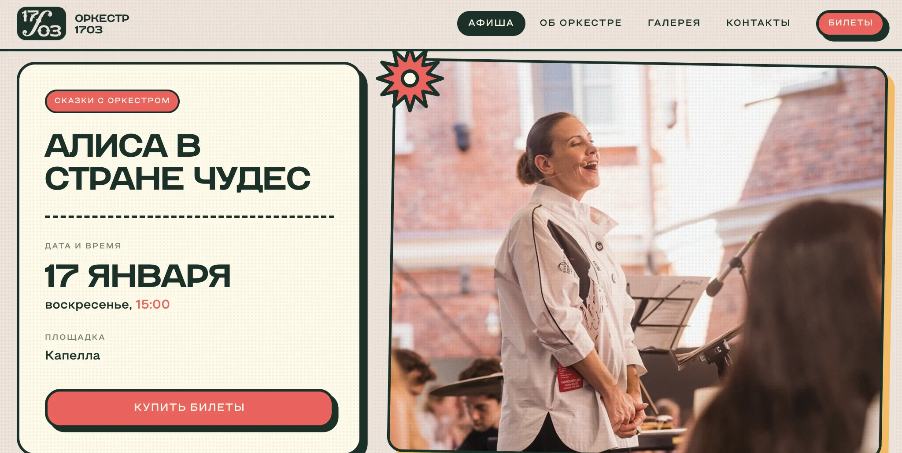

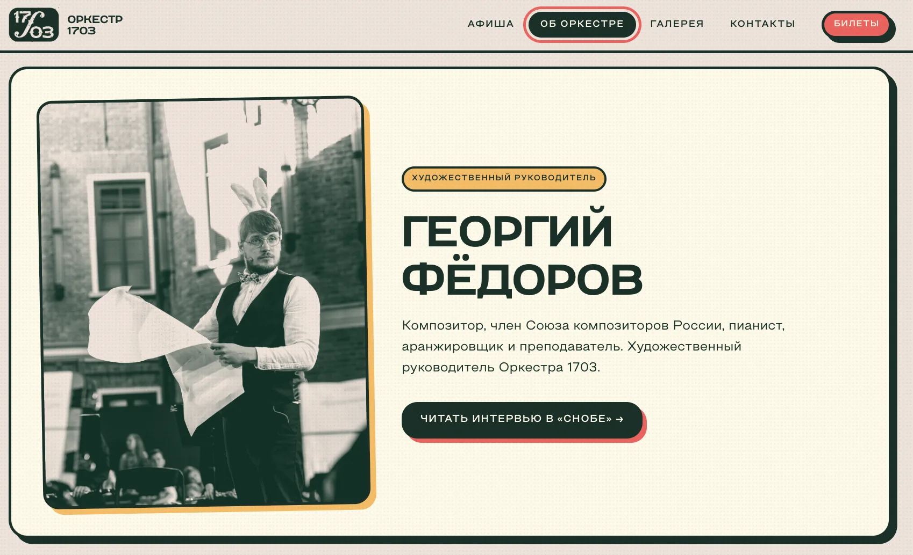

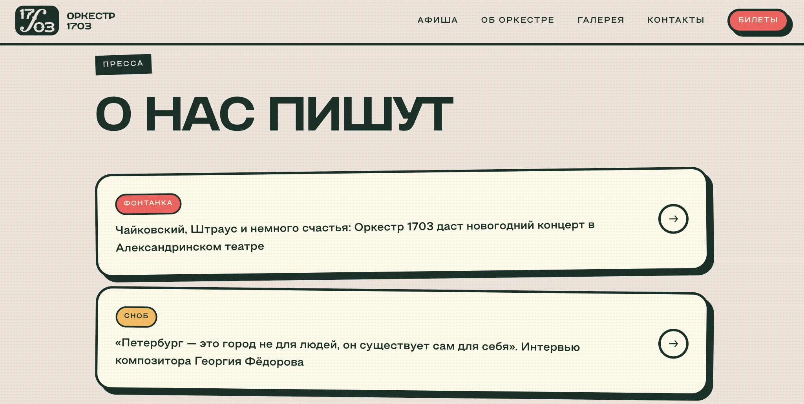

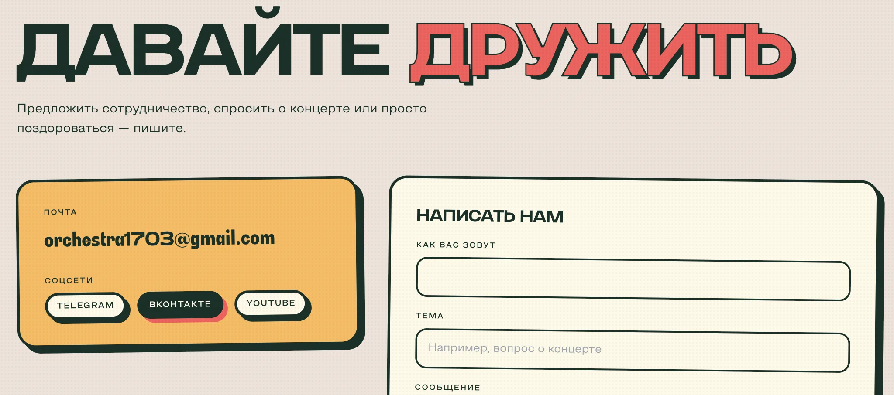
08 Запуск и рекламная поддержка
К выходу сайта я подготовила промо-комплект по брендбуку оркестра, куда вошли карусель для ленты, сторис со ссылкой и таргет-баннер на ближайший концерт.
Каждый формат закрывает свою цель. Карусель знакомит подписчиков с новым сайтом, сторис сразу ведут на покупку билетов, а таргет помогает зацепить холодную аудиторию, которая ещё не слышала о коллективе.
Карусель для ленты
Пять слайдов в формате 4:5. Цвета чередуются по фирменной палитре, а первый и последний слайды сделаны коралловыми, за счёт чего вся серия воспринимается как цельная история.


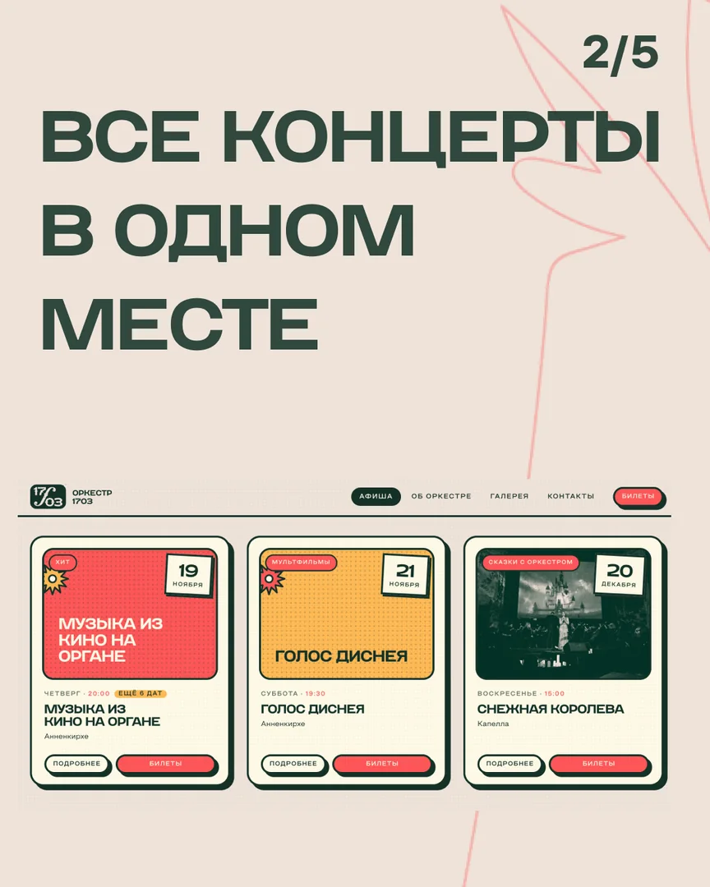

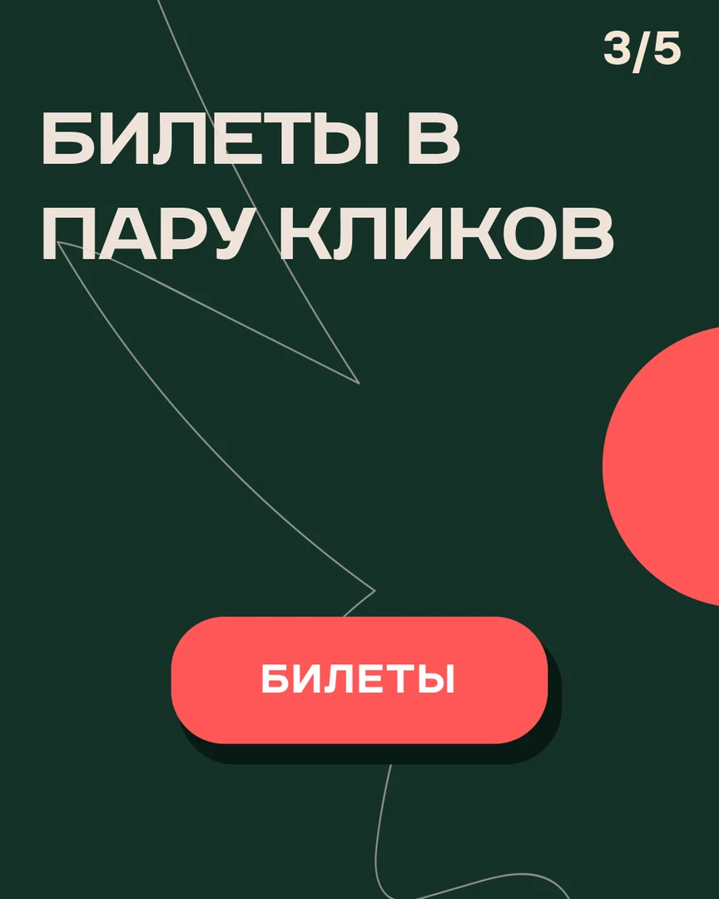

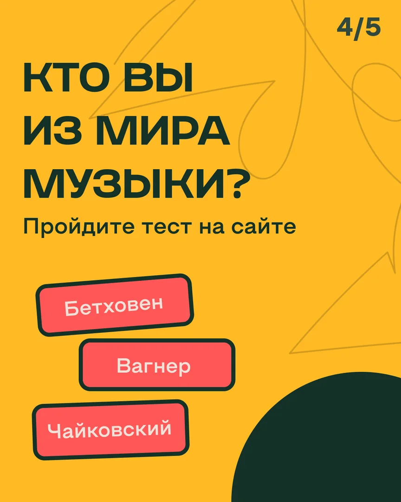

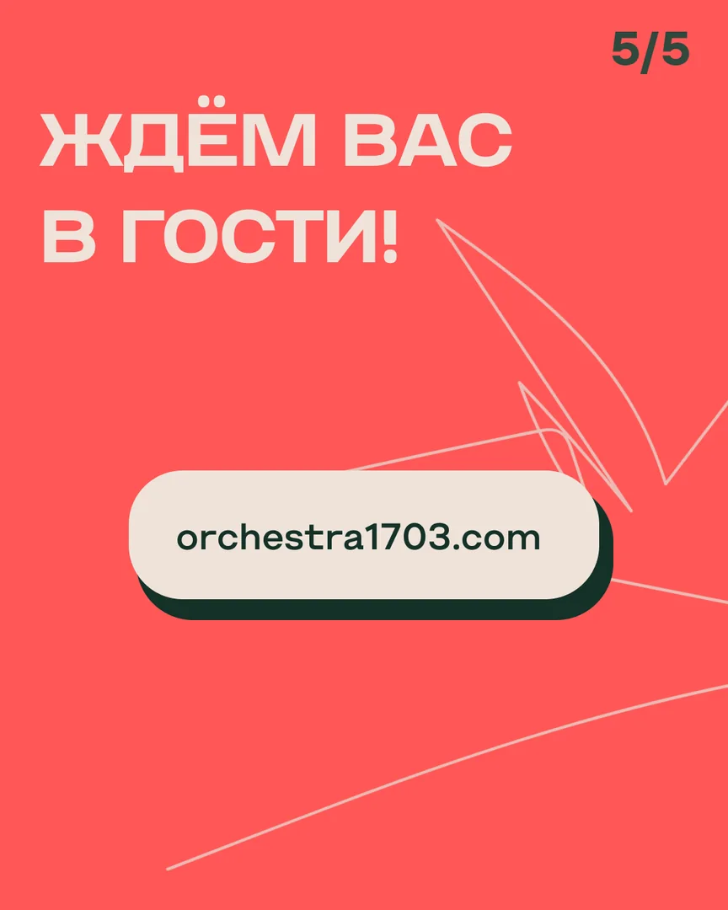
Сторис
Четыре экрана 9:16: вступление (хук), сам сайт, концерт и билет. Текст и кнопки держу подальше от краёв, где интерфейс Instagram перекрывает экран, а на последнем слайде стрелка ведёт к месту под ссылку.


Таргет-баннер
Тем, кто про оркестр ещё не знает, нужна зацепка, так что я заготовила в заголовке шутку.

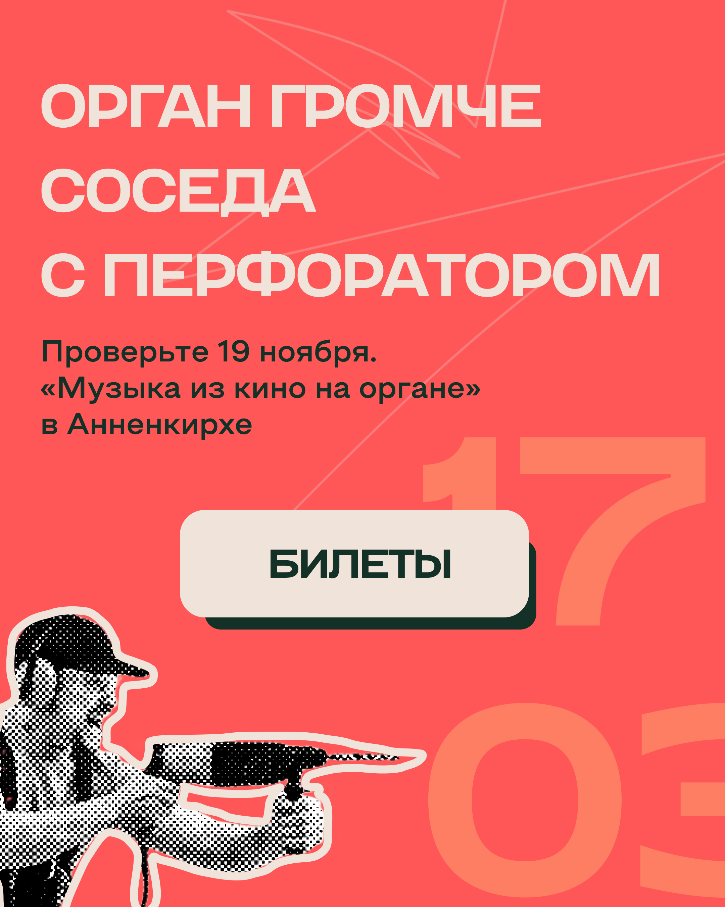
09 Результаты
Запустились в ноябре 2026 года, оркестр готовит анонс.
Метрика и цель на «Билеты» уже на месте — цифры добавлю после анонса.
10 Реализация
- Код собирала вместе с Claude — ставила задачи, проверяла результат и сама правила вёрстку со стилями. Сделала сайт на React, сохранив все шрифты и файлы локально, чтобы страницы стабильно и быстро открывались в России.
- Привязала проект к основному домену orchestra1703.com.
- Настроила для команды админку на Sveltia CMS, через которую сотрудники оркестра теперь сами обновляют афишу, новости, галерею и контакты без помощи разработчика.
- Подключила Яндекс Метрику с целью на кнопку «Билеты» и добавила плашку про cookie, которая отключает сбор статистики, если посетитель отказался.
- Встроила на сайт квиз «Кто ты из мира музыки?» и вынесла его анонс отдельным блоком на главную страницу.